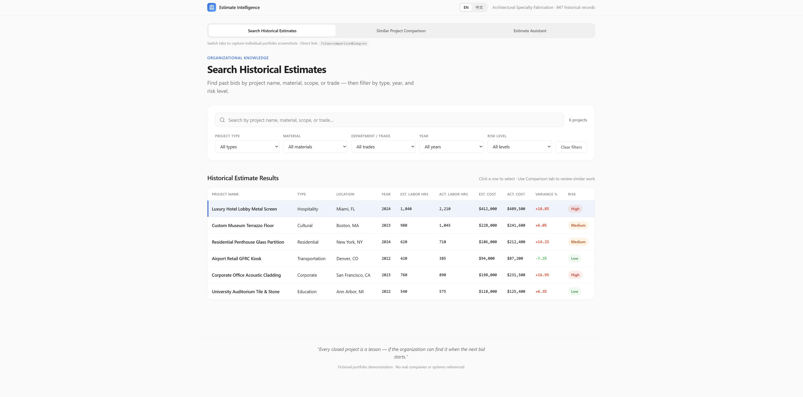
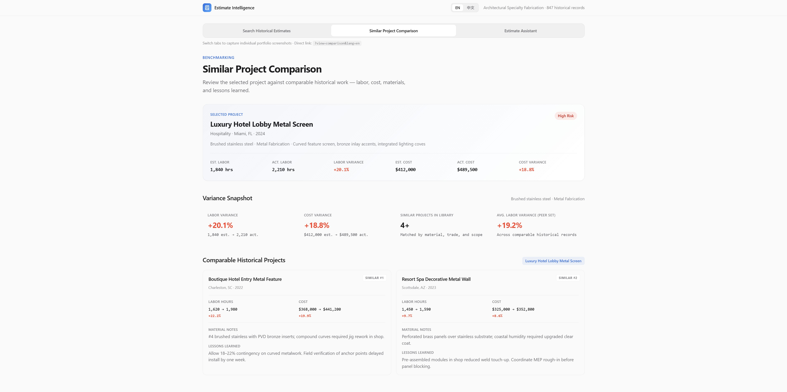
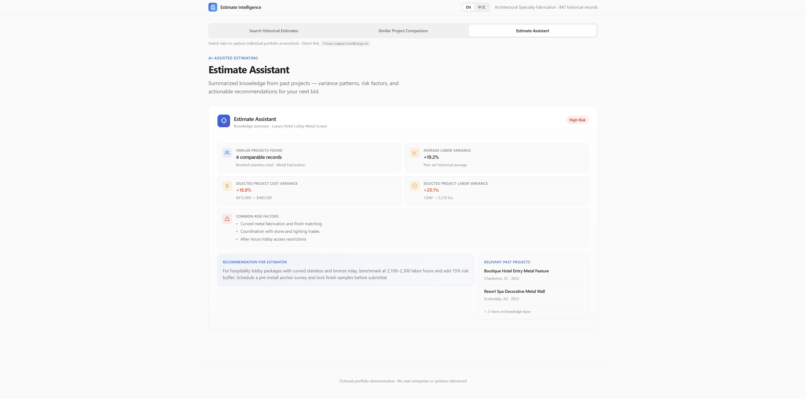

Transforming Historical Estimates into Organizational Knowledge
將歷史估算轉化為組織知識
Turning Scattered Estimating Data into Searchable Business Intelligence

Challenge
In custom manufacturing and project-based businesses, estimating speed often influences how quickly opportunities can be evaluated and pursued.
The faster an estimate can be completed, the sooner a company can assess project feasibility, forecast costs, and understand potential profitability.
However, estimating knowledge is often scattered across multiple locations: Excel files, emails, shared folders, and the experience of senior employees.
When a new project arrives, estimators frequently repeat the same process:
- Ask experienced managers for guidance
- Search through past project files
- Rebuild estimates from scratch
Over time, estimating expertise becomes concentrated in a small number of individuals.
When those individuals leave, much of that knowledge leaves with them.
Insight
After working in three architecture and manufacturing organizations, I noticed that the real problem was not a lack of data.
Most companies already possess the information needed to improve estimating: labor hours, material costs, project outcomes, and lessons learned from previous work.
The challenge is that this knowledge is difficult to access, compare, and reuse when it is needed.
Rather than starting with AI, I believed the first step was creating a reliable foundation for organizational knowledge.
Estimating is a process that depends on accuracy. If the underlying data is inconsistent or difficult to trace, AI does not solve the problem—it amplifies it.
Solution
I developed an estimating knowledge system that allows estimators to quickly access and learn from historical project data.
The system supports:
- Searching historical estimates by project type, material, and project size
- Comparing labor hours and cost structures across similar projects
- Using AI-assisted queries to find relevant historical examples and supporting information
- Uploading new estimating data to continuously expand the organization's knowledge base
The system is designed around a messaging-based interface, allowing estimators to access information within their existing workflows without learning a new software platform.
The current prototype uses LINE, which is widely adopted in Taiwan. However, the architecture is designed to support additional platforms such as Microsoft Teams, Slack, or web-based applications depending on organizational needs.
Technology Stack:
- Messaging Interface (Current Prototype: LINE)
- C#
- SQL Database
- OpenAI / Claude (AI Query Layer)
Concept Demonstration
The following screens demonstrate the product concept using sample data.
To better illustrate the user experience, the concept is presented as a web interface. The current prototype is built on LINE, with the architecture designed to support multiple front-end platforms.


Current Status
The prototype has been completed and is currently being evaluated through discussions with potential users in the architecture and manufacturing industries.
The long-term goal is not to automate estimating decisions, but to make organizational knowledge easier to access, reuse, and continuously improve.
Core Belief
The value of this system is not automated estimating.
Its value lies in building organizational memory.
When knowledge is stored in a searchable system rather than individual memory, new team members can ramp up more quickly, estimates can be based on historical evidence, and organizations can continuously learn from completed projects.
Every completed project generates more than revenue—it also creates a new knowledge asset for the organization.
Leave a Comment
留言
Share your thoughts about this project
分享您對此專案的想法